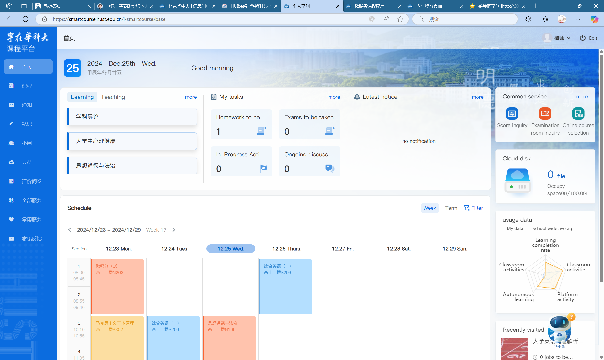
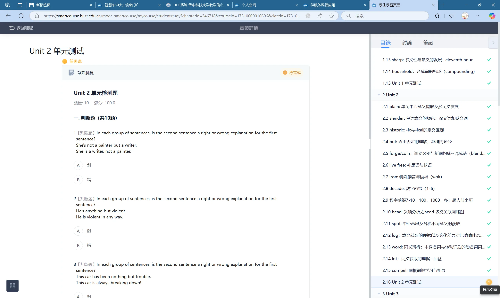
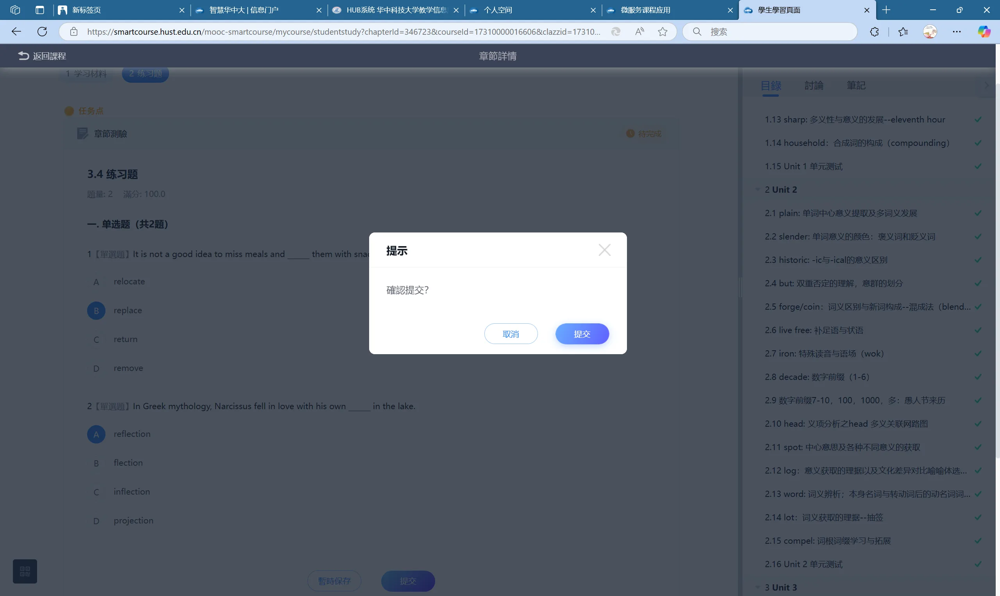
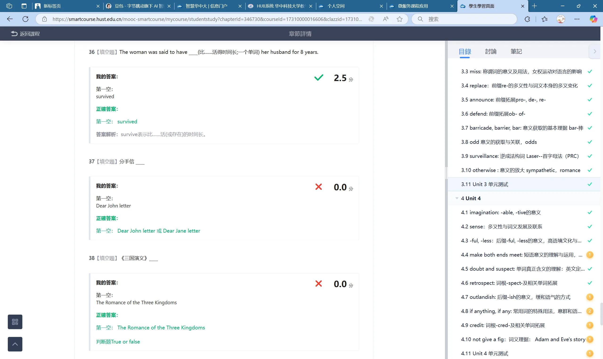
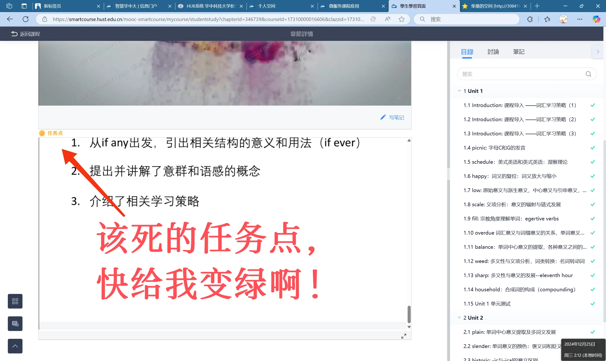
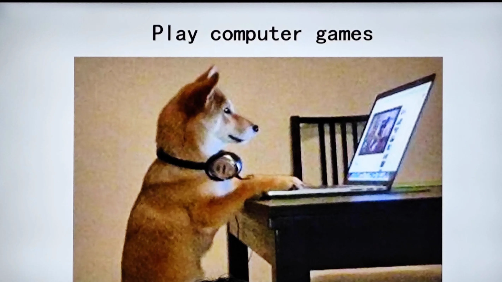
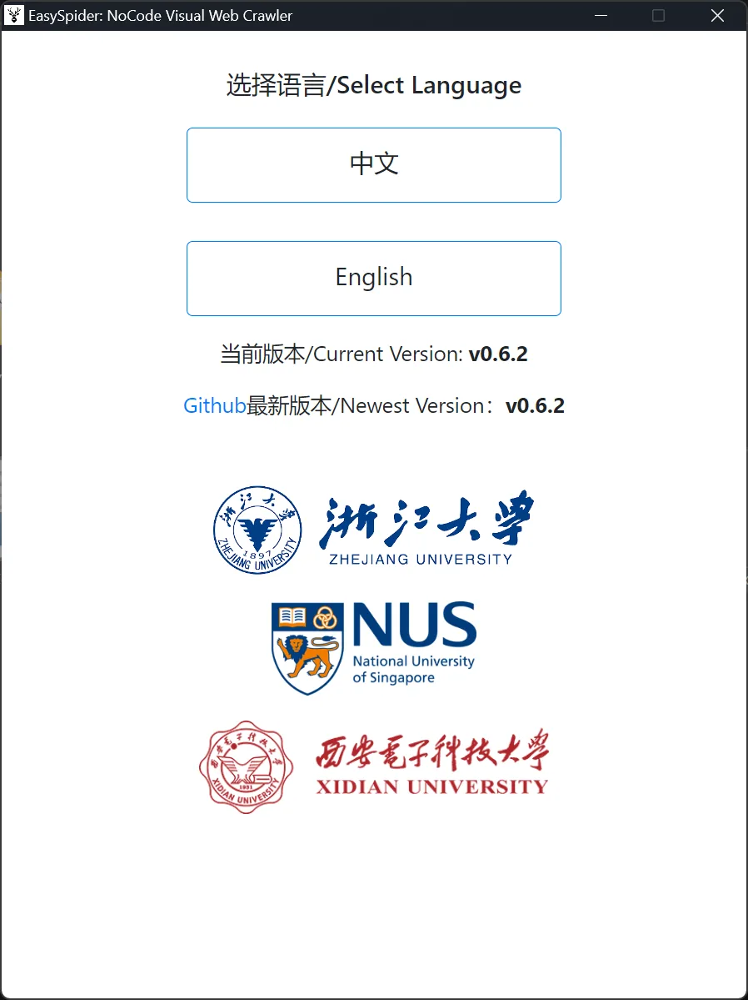
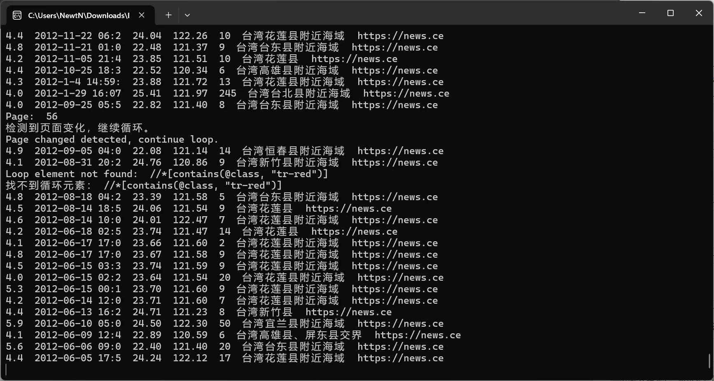
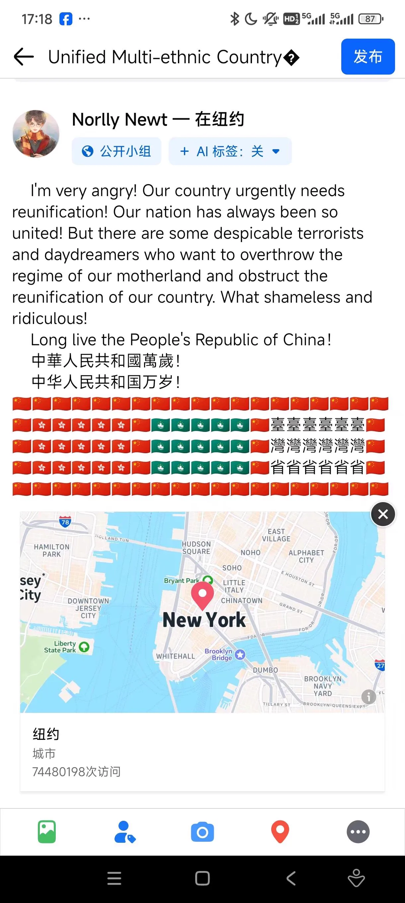

Journal · 2024-12-25
湖北省武汉市
编辑于2024年12月25日 02:33
大半夜刷课，
总感觉有些不对劲。
华科系统上，
我的的个人空间，
怎么都是英文？
我的学习界面，
怎么有部分系统字体，
是繁体字！
我并未挂梯子，
连接全球网啊。。









Edited on Dec 25, 2024 02:33
Cramming through my courses in the dead of night,
I keep feeling something is off.
On the HUST system,
my personal space,
why is it all in English?
My study interface,
why do some of the system fonts,
appear as traditional Chinese characters!
I didn't use a VPN,
to connect to the global internet..
Modifié le 25 déc. 2024 à 02:33
À bûcher mes cours en pleine nuit,
j'ai toujours l'impression que quelque chose cloche.
Sur le système de HUST,
mon espace personnel,
pourquoi tout est en anglais ?
Mon interface d'apprentissage,
pourquoi certaines polices du système,
sont en caractères traditionnels !
Je n'ai pas utilisé de VPN,
pour me connecter à l'internet mondial..
Bearbeitet am 25.12.2024 um 02:33
Mitten in der Nacht durch meine Kurse pauken,
habe ich ständig das Gefühl, dass etwas nicht stimmt.
Im HUST-System,
mein persönlicher Bereich,
warum ist alles auf Englisch?
Meine Lernoberfläche,
warum sind einige Systemschriften,
in traditionellen chinesischen Zeichen!
Ich habe keinen VPN benutzt,
um mich mit dem globalen Internet zu verbinden..